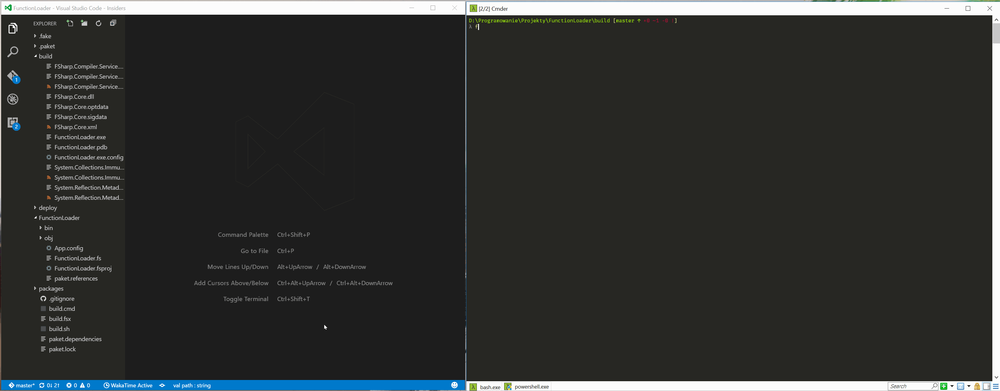

Dynamically extending F# applications
Introduction
Changing requirements, introducing different data format, extending applications with new features. All those things requires us (developers) to go to code, do changes, add API versioning system (to be backward compatible), add configuration for turning on/off new features, compile application, and at the end release new application (what itself may be complex process). It’s often lot of work required for every, even very small, change.
In this post I’ll present way to add new features to our F# application - dynamically, on runtime, without any recompiling and redeployment of application. What’s more extensions will be also defined using F#… in fact they will be simple F# script files.
Sample application
Our sample application for this blog post will be rather simple - it will be F# console application, taking user input as string, performing set of transformations on this input and just printing out result. Transformation for our input will be dynamically loaded on runtime - initially, before user add any plugins, application just returns same value as user typed in.
We can simply define our transformation as type Transformation = string -> string and operation we perform on input as let output = lstOfTransformations |> List.fold (fun state transform -> transform state ) input.
Evaluating plugins files
As I’ve mentioned our aim is to define extensions as simple F# script files. But while we can easily read text put in .fsx file, F# doesn’t have anything like JavaScript’s eval() function built-in, no way to take text containing code and evaluating its value. But this is a moment where FSharp.Compiler.Services enters the scene. FCS (not to confuse with FSC which is F# compiler) is fork of F# compiler that exposes additional functionality for implementing F# editor features, and additional tools based on the compiler. It also includes F# interactive service that can be used for embedding F# scripting into your applications.
If you want learn more about
FSharp.Compiler.Servicesvisit FCS webpage to see documentation of available features, APIs, and list of projects using FCS.
For our purpose we need two things - first we’ll create embedded in our application F# Interactive session, and then we will use it to load file with plugin and evaluate it.
Creating FSI session is pretty straightforward:
open Microsoft.FSharp.Compiler.Interactive.Shell
let sbOut = StringBuilder()
let sbErr = StringBuilder()
let fsi =
let inStream = new StringReader("")
let outStream = new StringWriter(sbOut)
let errStream = new StringWriter(sbErr)
let fsiConfig = FsiEvaluationSession.GetDefaultConfiguration()
let argv = [| "/temo/fsi.exe"; |]
FsiEvaluationSession.Create(fsiConfig, argv, inStream, outStream, errStream)
Next we can use FSI session to load file with extension and evaluate it’s content.
let evaluate path =
let mdl = getOpen path
let load = getLoad path
fsi.EvalInteractionNonThrowing(sprintf "#load \"%s\";;" load)
fsi.EvalInteractionNonThrowing(sprintf "open %s;;" mdl)
fsi.EvalExpressionNonThrowing "map"
match res with
| Choice1Of2 (Some f) ->
f.ReflectionValue :?> Transformation |> Some
| _ -> None
First we find full path to file we want to load, and name of default module for this file (it’s name of the file with first character uppercase).
We execute in FSI #load statement to load content of extension file, and then we open default module. Last operation is executing map in FSI which will return value of this expression (so function).
For sake of simplicity in sample, we make several assumptions about extensions files - we don’t define modules inside of
.fsxfiles and they contain only single functionmap : string -> string.
If everything is working we can now load F# script file and get from it normal F# function which we can execute somewhere else in our code!
Loading plugins on runtime
Next important feature of our application is dynamically loading (and unloading) scripts when users creates (or removes) them. For this we will use built-in .Net FileSystemWatcher class which let developer to perform operations whenever new file is created, file is removed etc. in given directory.
We just create really simple functions which takes 2 functions (one executed when file is added, second one when file is removed) and directory to watch for changes:
let create addCb rmCb dir =
if Directory.Exists dir |> not then Directory.CreateDirectory dir |> ignore
let watcher = new FileSystemWatcher()
watcher.Filter <- "*.fsx"
watcher.Path <- dir
watcher.Created.Add (fun n -> n.FullPath |> addCb)
watcher.Deleted.Add (fun n -> n.FullPath |> rmCb)
watcher.Renamed.Add (fun n -> n.OldFullPath |> rmCb; n.FullPath |> addCb)
watcher.Changed.Add (fun n -> n.FullPath |> rmCb; n.FullPath |> addCb)
watcher.SynchronizingObject <- null
watcher.EnableRaisingEvents <- true
watcher
Plugins register
The last important part is storing list of the transformations in memory when application is running. Since FileWatcher is running asynchronously in background of our applications we are afraid of any potential race conditions so we won’t use any global mutable state to do so. Instead we will encapsulate state of our application in agent.
To learn more about F# Agents visit Scott Wlaschin’s post about them
type private Msg =
| Add of string * Transformation
| Remove of string
| Get of AsyncReplyChannel<Transformation list>
let private register =
MailboxProcessor.Start (fun inbox ->
let rec loop lst = async {
let! msg = inbox.Receive()
match msg with
| Add (n,f) ->
return! loop ((n,f)::lst)
| Remove n ->
return! loop (lst |> List.filter(fun (f,_) -> f <> n))
| Get rc ->
let l = lst |> List.map snd
rc.Reply l
return! loop lst
}
loop [] )
let add name fnc =
(name, fnc) |> Add |> register.Post
let remove name =
name |> Remove |> register.Post
let get () =
register.PostAndReply Get
Our agent can perform 3 operations - add transformation, remove it, or return list of all transformations.
Putting things together
The last step is putting whole application together:
[<EntryPoint>]
let main argv =
let remove path =
let fn = Path.GetFileNameWithoutExtension path
Register.remove fn
let add path =
let fn = Path.GetFileNameWithoutExtension path
match Evaluator.evaluate path |> Option.map (fun ev -> Register.add fn ev ) with
| Some _ -> ()
| None -> printfn "File `%s` couldn't be parsed" path
let watcher = Watcher.create add remove "scripts"
while true do
let input = System.Console.ReadLine ()
let lst = Register.get ()
let res = lst |> List.fold (fun s e -> e s ) input
printfn "Result: %s" res
First we define callbacks for file watcher - on file remove we just send message to extensions register to remove it, when file is added we try to evaluate it and if it was successful we send message to agent to add it to list.
Then we create watcher using those 2 functions watching scripts directory.
Last step is loop which waits for user input, gets all transformations, apply them to input, and print out result at the end. Here is small demo:

Summary
In this post I’ve shown how to use FSharp.Compiler.Services to add dynamic extensibility mechanism to F# applications. Sample presented in this blog post was really simple, but I believe that this technique can be also used for more complex, real world applications (hopefully, I’ll be able to create some more complex project using this method soon ;) ). Full code for sample application can be found on GitLab (!)